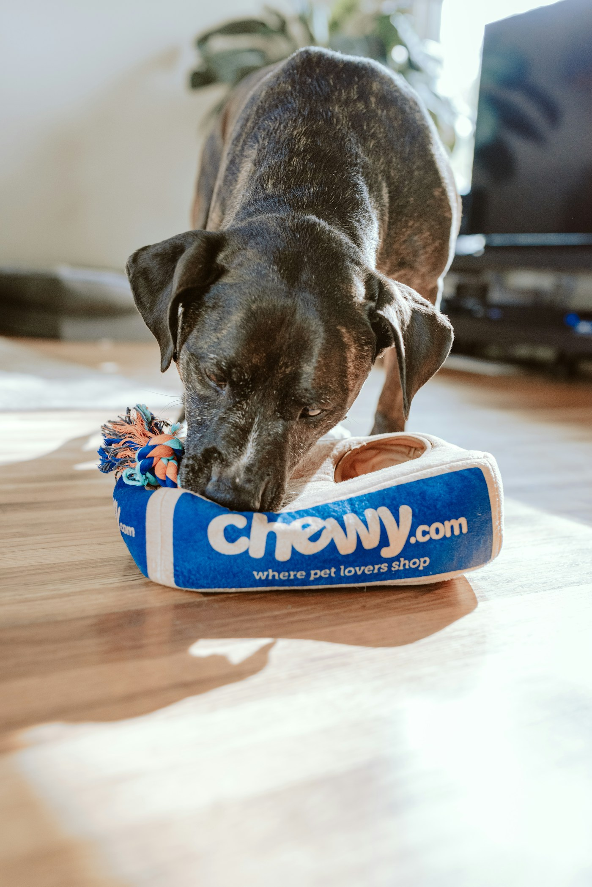

Seu carinho pode
virar cuidado.
Uma consulta, um tratamento, um prato cheio. Ajude a escrever um novo capítulo na vida de um pet.

Cada ajuda também.
—campanhas abertas
—arrecadados · total informado
De pessoa para petvocê escolhe quem ajudar
Campanhas para apoiar
Carregando campanhas…
Como sua ajuda chega
Você faz o Pix no aplicativo do seu banco. O AdotaPet conecta você à campanha.
- 01
Conheça a história
Veja o pet, o motivo da arrecadação e quem é responsável.
- 02
Confira e faça o Pix
Copie a chave. Antes de confirmar no banco, confira se o nome do recebedor é o informado na campanha.
- 03
Acompanhe as novidades
Os totais e as atualizações são publicados pela administração após contato com o responsável.
O AdotaPet não recebe nem processa o dinheiro. As doações são feitas diretamente à ONG ou ao responsável. Os valores arrecadados são informados manualmente e não representam confirmação bancária automática.